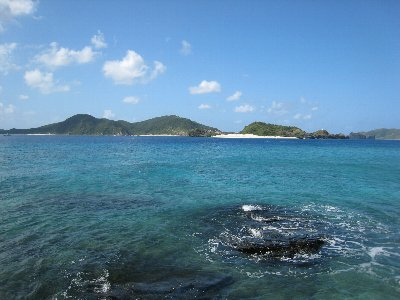
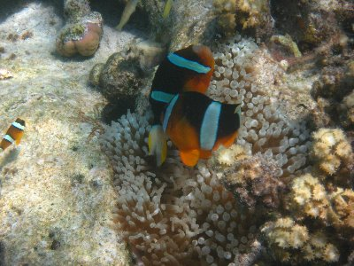
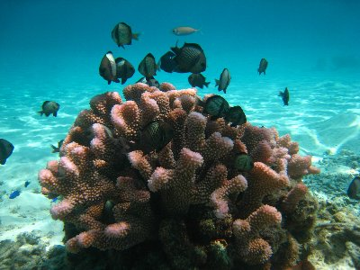
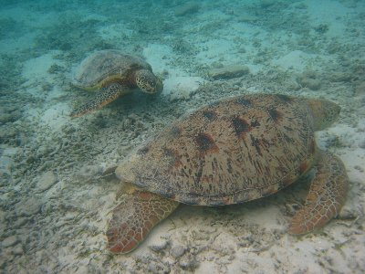
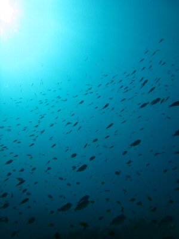

離島に行こうよ！（慶良間諸島） | 2009年9月 |
|---|---|
| はい、今年も行ってきました沖縄！ ここ数年この（台風）時期に沖縄に行ってます。台風に当ったことはないですがね。主に離島攻めです。 さて今年の離島は、沖縄本島から高速船で1時間という、そこそこ近い慶良間諸島の座間味島に行きました。 慶良間諸島はダイビングをやっている方なら、行ったことあるんじゃないかな？ 沖縄本島からの日帰りダイビングツアーもあったりしますよね。 とにかく、海がきれいなんです。まさにコバルトブルー！ 大小いくつかの島に囲まれている慶良間の海は、遠浅で白い砂が美しく、サンゴも沢山！ そのサンゴ周辺には、南の魚たちがまさにウヨウヨ！ 掛け値なしにウヨウヨです！ 怖いくらいにウヨウヨです。 | |
|  ほーんと、綺麗な海です♪ |  目の前の浜で |
| 今回は座間味島に3泊したのですが、座間味にはキャンプ場が一つあり、そこに滞在しました。一泊300円ですから。テント持って。 私の今回の目的は、もちろんシュノーケルですが、ダイビングもやってカヤックもやりました。 まずはシュノーケルから。 キャンプ場が浜にあるので、すぐ目の前がシュノーケル場です。白い砂浜にコバルトブルーの海。 ここの海はとっても遠浅で、沖のほうに行くとサンゴが見られます。そして魚たち。手軽に遊べる場所でこれですからたまりません。朝から晩まで行けちゃいます。 しかも、この浜はカメもいるんです。泳いでいるの見ました。カメですよ！ 一緒に泳げちゃうんですよ。（まあ、大半は草食べていますが）2匹までは発見しました。 | |
|  クマノミも。シュノーケルでですよ。 |  とにかく魚が一杯！ |
| ≪ダイビング≫ 今回は３ボートダイビングをやりました。一日がかりです。一本目は「安室漁礁」水深14m位。漁礁としてコンクリートのブロックを沈めてあって、そこに新たなサンゴや魚が住んでるんですよね。 ここではハナミノカサゴを見ました。 2本目は「送電線」。島と島を海底の送電線でつないでいるのですが、そのポイントですね。ここは日本で見る事が出来る6種類のクマノミのうち、5種類が見られるそうです。水深同じく14m位。 ここはサンゴが多い所で、下一面サンゴ礁です。足で突かないように慎重に浮力調節です。茶系のサンゴが多いですね。 3本目は「阿真ビーチ沖」。この阿真ビーチがキャンプしているところです。遠浅の終焉というか、急に深くなるところからダイブ開始です。だから水深5m位からスタートして、15m位まで行くんですけどね。あまりそんな気はしなかったけど。 白い砂がきれいなところです。その白い砂の所々にサンゴがあって、魚が群れをなしています。 | |
|  阿真ビーチにいるカメ。海の中です。 |  ダイビングで潜ると、竜宮城です。 |
| ≪シーカヤック≫ 今回はシーカヤックをレンタルして、無人島巡りをしました。まあ、無人島と言っても、渡しの船があるので、昼間は人がいるんですがね。 巡る島々は、目の前に見える島、一瞬泳いで行けそうな島なので、迷うこともなくそれぞれ30分位漕げば行けるので、手軽な遊びとも言えます。 ただし、一人で行けば、転覆した時に困るので注意が必要です。船が通ると三角波が来ますからね。 私はこれで、嘉比島、阿嘉島、安慶名敷島と行きまして、それぞれでシュノーケルをやりました。特に最後の安慶名敷島は、サンゴと魚が豊富で満足です。あ、阿嘉島は無人島ではありません。 | |
 安室魚礁でハナミノカサゴ |  ダイバーの周りにも魚一杯です |
| ≪島渡し≫ 先ほども書いたけど、島渡しの船があるので、それを利用して無人島に渡るのもいいでしょう。私は安室島に渡りました。 安室島は渡し料金が他より高いぶん、客が少ないんです。（2500円。他は1500円） 私が行った時は、他に誰もいなくて一人で独占状態でした。 安室島の東側でしたが、ほんとに多くのサンゴが見られます。（茶系ですが） 誰もいないため、浜に打ち上げられたゴミが目につきますが、他は楽園状態ですね。一日いても飽きないでしょう。 | |
 阿真ビーチ前 白い砂が綺麗だよね〜 |  シーカヤックで無人島 |
| ≪食事≫ ひとり旅だと食事を作るのは面倒なので、だいたい外食です。座間味は港の近くに種類が豊富な「座間味食堂」があります。夜遅くまで営業しているのでとても便利♪ ここで、ヘチマ味噌煮定食、パパイヤチャンプルー定食を食べました。両方とも沖縄では普通に食べられているようですが、ちゃんと美味しいですね。パパイヤは有りですよ。 朝食は105ストアーで主にパン食。不思議なパンとして、オキコパン製で「餃子パン」ってのがありました。餃子の具をパンに挟んだものです。温めるとさらに美味しくと書いてありましたが、普通に袋を開けただけでニンニク臭がするんですから、きっと温めたらさらに強烈です。 | |
 マジに透ける海でしょ！ 安室島 |  珊瑚にも魚の群れが。安室島 |
| いや〜、毎年離島に行きますが、離島は行きだすとやめられません。特に座間味は、田舎的雰囲気で良いですね。また行きたいです。 追伸 来年の春から座間味では、ダイバーの数を制限するそうですね。サンゴを保護する目的だそうです。ダイビングの船から出る排気ガスや排水。ダイバーがウッカリ踏んでしまうサンゴ。 人が多く入れば、やっぱり自然は少なからず壊れてしまいます。ダイバー人数制限。仕方ないですね。値段上がったりして。 | |
| 写真＆コメント by べっしー | |